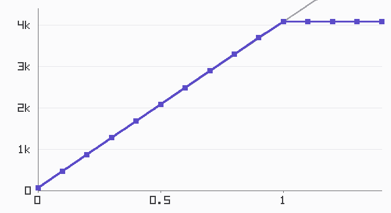
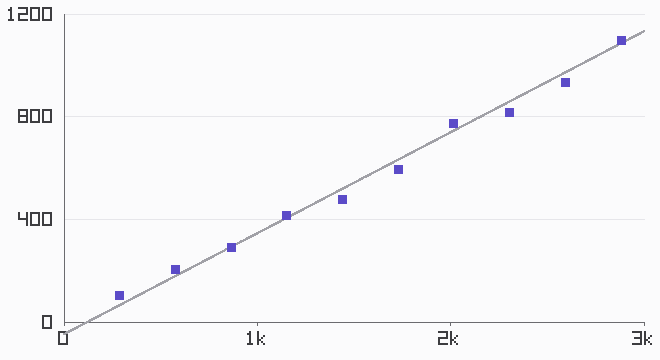
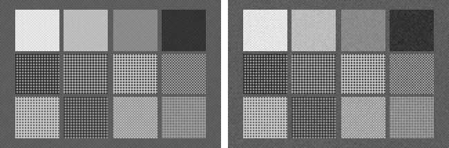
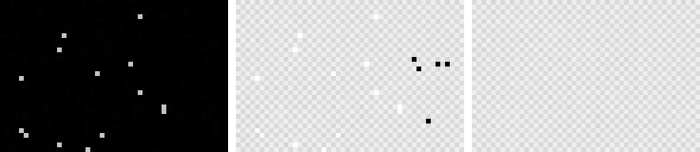
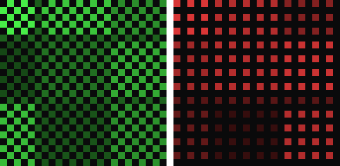

Chapter 1 built a machine that carefully ruins a perfect scene: spectra in, quantized mosaic out. From here the book climbs back. But before any climbing — before white balance, before demosaicing, before anything that deserves the name processing — we need to understand exactly what the numbers in the raw file are. This chapter is about those numbers: what they measure, how they wobble, and the two small repairs that must happen before anything else touches them.
2.1A photosite is a bucket
Strip away the optics and the electronics and a photosite is a bucket in the rain. Photons arrive; some fraction convert to electrons; the electrons accumulate until the exposure ends or the bucket fills. That’s the entire sensor response story, and it has one glorious property: it is linear. Twice the light, twice the electrons, twice the number in the file — with none of the shoulder and toe curvature that film had, no gentle roll-off near the top, nothing. Linear, then full:

The wall matters as much as the line. When a photosite’s well fills, it stops counting — it doesn’t compress, it doesn’t taper, it saturates, and everything above the ceiling reads as exactly full scale. A real highlight clipped this way is information destroyed at the moment of capture, which is why Chapter 7’s highlight reconstruction is necessarily a guessing game, and why photographers meter to protect highlights rather than shadows.
Photographers count light in stops — factors of two. In linear terms one stop up is a multiplication by 2, which is why exposure in Chapter 0 was one line of arithmetic. The mismatch between this linear world and human vision (which is roughly logarithmic — each stop, not each electron, feels like an equal step) is the engine behind Chapter 7. For now, one consequence is worth pocketing: of a 12-bit sensor’s 4096 levels, the brightest stop owns 2048 of them and the deepest shadow stop owns a handful. Linear encodings spend their precision on highlights whether you like it or not.
2.2The three noises
Capture the same scene twice and the files differ. Not by much, and not anywhere in particular — every value wobbles a little. That wobble has exactly three sources in our sensor (and, to good approximation, in yours), and they are worth keeping separate because each one is defeated differently.
Shot noise is the big one, and it is not the sensor’s fault. Light arrives in discrete photons, and the arrivals are random; a photosite expecting \(N\) electrons over an exposure collects \(N \pm \sqrt{N}\). That square root is the whole story of photographic noise. It means the absolute wobble grows with signal, but the relative wobble — noise as a fraction of signal, the thing your eye judges — shrinks as \(\sqrt{N}/N = 1/\sqrt{N}\). Bright image regions look clean not because they’re less noisy but because they’re more signaled. There is exactly one cure: collect more photons. Bigger sensors, longer exposures, wider apertures — all of photography’s expensive habits are \(\sqrt{N}\) written as hardware.
Read noise is the electronics: a few electrons of Gaussian fuzz added by the readout wiring whether light arrived or not. It happens after the well, which means it can push a true-black pixel below zero — remember that for the next section. On our sensor it’s 4 electrons; against a full well of 12,000 it only matters in the deepest shadows, which is exactly where you’ve seen it in every long-exposure night shot.
Fixed-pattern noise is the impostor. Each column amplifier has a slightly different gain, so it produces the same stripes in every frame — which makes it, strictly, not noise at all but an error, and errors can be measured once and subtracted forever. The random noises can only ever be averaged down; the fixed pattern can be removed. That distinction — reducible versus correctable — organizes everything the pipeline does about noise.
The classic way to see the first two on a real sensor is the photon transfer curve: photograph a featureless gray at many exposures, and for each frame plot the variance of the values against their mean.

That straight line is \(\sigma^2 = \text{gain} \cdot \text{signal} + \sigma_{\text{read}}^2\) wearing experimental clothes, and it’s how sensor reviewers characterize cameras they’ve never seen the schematics for. We get it from twelve captures and thirty lines of figure code — with the difference that we can check the answer against the constants we typed into the sensor ourselves.
And ISO? ISO is a gain knob, applied at readout. It multiplies the signal — and the noise that rode in with it — after the photons have already been counted. Turning ISO up does not add light:

Why does a processing book care this much about capture physics? Because noise is the pipeline’s constant passenger. Every stage from here on either respects it or amplifies it: white balance multiplies whole channels (and their noise) by 2 or 3; demosaicing can smear one noisy sample across three output values; sharpening is a noise amplifier by design. And Chapter 8’s noise reduction leans directly on what we just established — that noise strength varies with signal in a known way, which is what lets an algorithm judge whether a small difference is detail or chance.
2.3First blood: black level and dead pixels
Now the pipeline begins. The raw file’s values are not yet measurements of light — they’re measurements plus an offset, stored as integers, with a few liars among them. Two repairs, in order.
First, the offset. Chapter 1’s sensor added a black_level before quantizing, so that read noise dancing around true black would survive the trip through an unsigned integer. Undoing it is the pipeline’s opening move, folded into converting everything to floats on a sane scale:
code/pxp/rawproc.pydef linearize(raw):
"""Subtract the black level and scale so that 0.0 means no light
and 1.0 means full scale.
Deliberately does NOT clip at zero: read noise puts honest
negative values around true black, and cutting them off would
bias every dark-region average upward. Negative samples are
data. They stay until output encoding.
"""
scale = raw.white_level - raw.black_level
return [[(value - raw.black_level) / scale for value in row]
for row in raw.values]
The docstring’s warning is the section’s one real lesson. After subtraction, a pixel that saw no light averages zero only because its negative samples survive to pull down its positive ones. Clip those negatives — round them up to zero because “negative light is silly” — and every dark region in the image acquires a subtle upward bias that no later stage can detect, let alone undo. It is the pipeline’s first opportunity to destroy information politely, which is why the clipping happens exactly once in this book, at output. From here on, the image is floats, and some of them are less than zero, and that is correct.
Second, the liars. An aging sensor accumulates hot photosites (dark current so high they glow in every frame) and dead ones (no response at all). Their positions are fixed per physical sensor — a defect is a place, not an event — and that fixedness is what makes them correctable. Two calibration frames reveal them: a dark frame (lens cap on), where healthy sites read near zero and hot ones stand out like stars, and a flat frame (featureless gray), where healthy sites read normally and dead ones fall conspicuously short:
code/pxp/rawproc.pydef find_defects(dark, flat, hot_threshold=0.04, dead_fraction=0.5):
"""Locate defective photosites from two calibration frames,
both already linearized.
dark: a frame exposed to no light. Healthy sites read near 0;
hot sites glow above the threshold.
flat: a frame of a featureless mid-gray. Healthy sites read near
their channel's typical level; dead sites fall far below it.
"""
height, width = len(dark), len(dark[0])
channel_mean = [0.0, 0.0, 0.0]
channel_count = [0, 0, 0]
for y in range(height):
for x in range(width):
channel = cfa_channel(x, y)
channel_mean[channel] += flat[y][x]
channel_count[channel] += 1
for channel in range(3):
channel_mean[channel] /= channel_count[channel]
defects = set()
for y in range(height):
for x in range(width):
if dark[y][x] > hot_threshold:
defects.add((x, y))
elif flat[y][x] < dead_fraction * channel_mean[cfa_channel(x, y)]:
defects.add((x, y))
return defects
The repair is deliberately humble — each defective site takes the average of its nearest same-filter neighbors. On a Bayer mosaic that means stepping two pixels, not one, in each direction; a hot green site must be rebuilt from green witnesses, never from the red and blue sites adjacent to it:
code/pxp/rawproc.pydef fix_defects(mosaic, defects):
"""Replace each defective photosite with the mean of its nearest
same-filter neighbors.
On a Bayer mosaic the neighbor two steps away in x or y is
guaranteed to sit under the same color filter — so the repair
never mixes channels. Interpolation proper starts in Chapter 4;
this is triage.
"""
height, width = len(mosaic), len(mosaic[0])
fixed = [row[:] for row in mosaic]
for x, y in defects:
neighbors = []
for dx, dy in ((-2, 0), (2, 0), (0, -2), (0, 2)):
nx, ny = x + dx, y + dy
if (0 <= nx < width and 0 <= ny < height
and (nx, ny) not in defects):
neighbors.append(mosaic[ny][nx])
if neighbors:
total = 0.0
for value in neighbors:
total += value
fixed[y][x] = total / len(neighbors)
return fixed

find_defects and fix_defects. On our simulator the calibration recovers the defect map exactly — every planted defect found, no healthy pixel accused — and the test suite holds it to that.These two functions are the book’s first true pipeline stages, so the two-tier contract from Chapter 0 now comes due: both exist in pxp.fast as NumPy twins — linearize collapses to one array expression — and the tests assert both tiers produce identical output, to the last bit. (Writing that test caught a real discrepancy while this chapter was being built: Python’s built-in sum() quietly uses compensated summation that NumPy’s arithmetic doesn’t, and the two tiers disagreed in the fifteenth decimal place. The reference code now accumulates with an explicit loop — which is what this book claimed its code did anyway. Contracts work.)
2.4Why a mosaic, anyway
The strangest thing about the raw file isn’t the noise or the offset — it’s that a “color camera” measured only one color per pixel. That was a choice, made by Bryce Bayer at Kodak in 1975 under constraints that still hold, and the pipeline inherits it as its central puzzle. So before Chapter 4 spends a chapter undoing the mosaic, it’s worth one section on why it’s there.
The straightforward alternatives all cost too much. Three sensors behind a beam-splitting prism deliver full color at every pixel — broadcast cameras did exactly this — at triple the sensor bill plus an optical alignment problem, in a package no lens mount wants. Stacked photodiodes that separate color by penetration depth (Foveon’s design) pay in cross-contamination between the layers and noise in the separation arithmetic. A filter mosaic costs one sensor, zero moving parts, and a software problem. The industry took the software problem.
Given a mosaic, the pattern itself is an argument about what to sample most. Human vision takes nearly all of its spatial acuity from luminance — from brightness structure, not color. The middle of the spectrum, where the green filter sits, contributes most of what the eye reads as luminance. So Bayer’s arrangement spends half of all photosites on green and splits the remainder between red and blue:

The bet has consequences the rest of the book keeps meeting. Green’s dense grid is why demosaicing algorithms reconstruct green first and lean on it to guide red and blue. Red and blue’s sparse grids are where demosaicing artifacts are born — a one-in-four lattice simply cannot see fine detail that a one-in-two checkerboard can, and Chapter 4’s zippering and color fringes are that arithmetic coming home. Other patterns place the same bet with different chips: Fuji’s X-Trans spreads a 6x6 arrangement to trade regular aliasing for irregular (Chapter 4 discusses it without reimplementing Fuji’s processing), and phone sensors’ quad-Bayer groups gang four tiny sites under one filter to trade back resolution for light. Nobody has escaped the trade; they’ve only chosen different corners of it.
The frame is now as honest as capture allows: linear floats on a sane scale, zero meaning darkness (on average), every photosite either truthful or repaired, and a mosaic whose logic we understand. What the image is not, yet, is the right color — every value still wears the orange of whatever light lit the scene, exactly as Figure 1.1 warned. Chapter 3 fixes that, and it will insist on doing so before the mosaic is unwoven — an ordering argument the book has been saving since the introduction.